Figures from the main manuscript, the geographic and altitude analyses, and population stratification.
🚀 AstroBotany Hub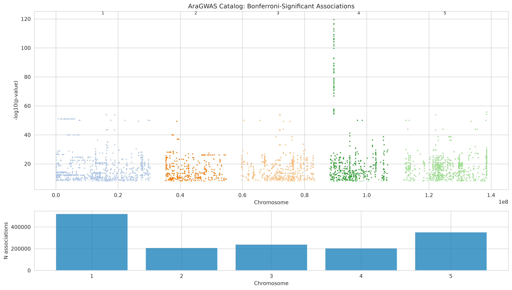
Manhattan plot displaying 1,523,262 Bonferroni-significant SNP-trait associations across 285 GWAS studies and 279 phenotypes in Arabidopsis thaliana.
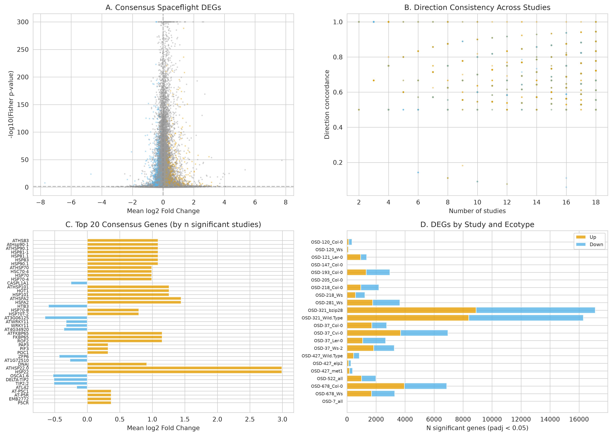
Cross-study volcano plot and top enriched GO Biological Process categories across 13 NASA GeneLab spaceflight studies (22 comparisons; 2,550 consensus DEGs).
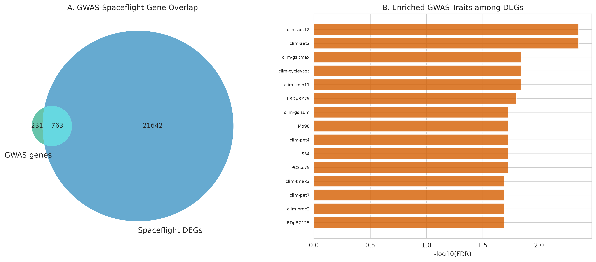
Over-representation analysis showing 763 overlap genes between GWAS candidates and spaceflight DEGs (Odds Ratio = 4.23, p = 4.45e-102).
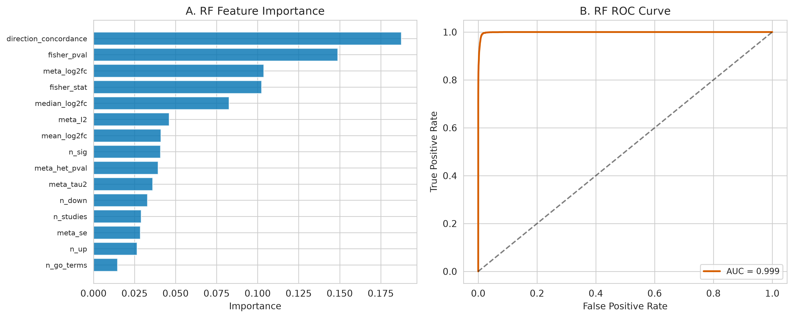
(A) Random forest feature importances and (B) ROC curve (AUC = 0.999), both recomputed from the committed classifier tables. The features include the Fisher and meta-analysis statistics that define the consensus label, so the AUC reflects recovery of the labelling rule, not independent predictive performance. (C) Distribution of the 982 predicted ecotype scores; 694 accessions share the same score (0.641). Script: code/29_fig4_ml_results.py.
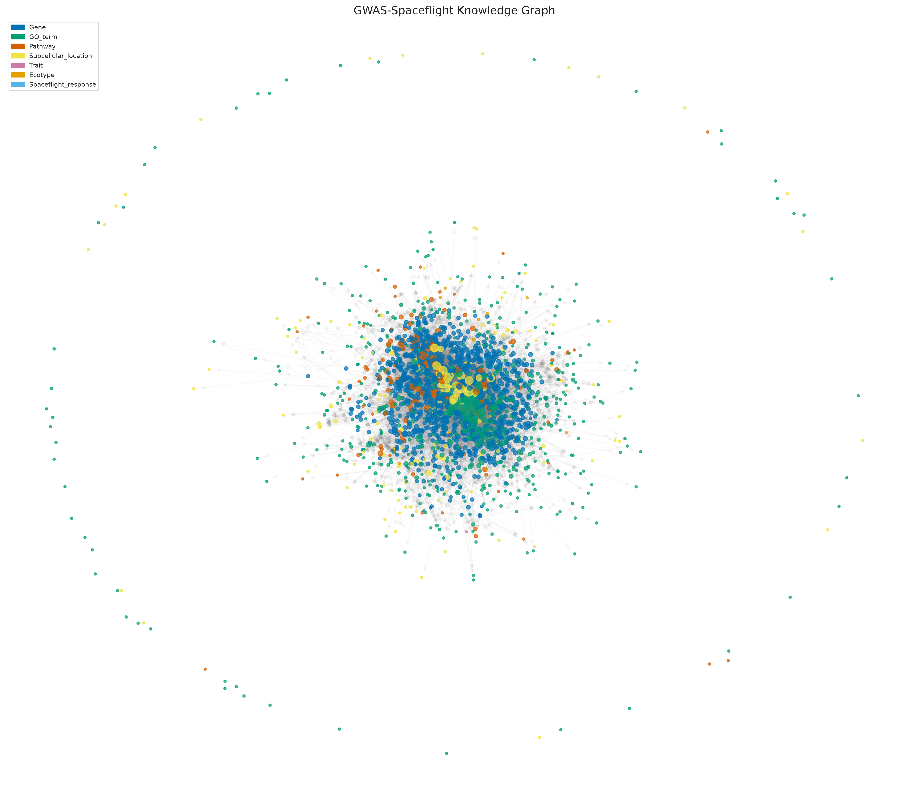
Network graph (24,565 nodes, 92,904 edges) interconnecting GWAS loci, DEGs, GO terms, KEGG pathways, subcellular localizations, and ecotypes.
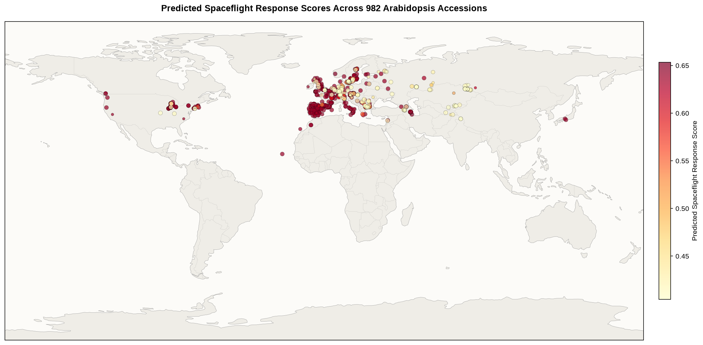
Global map of 982 1001 Genomes accessions scored at the 31 highest-scoring AraGWAS SNPs, with Open-Meteo elevation data.
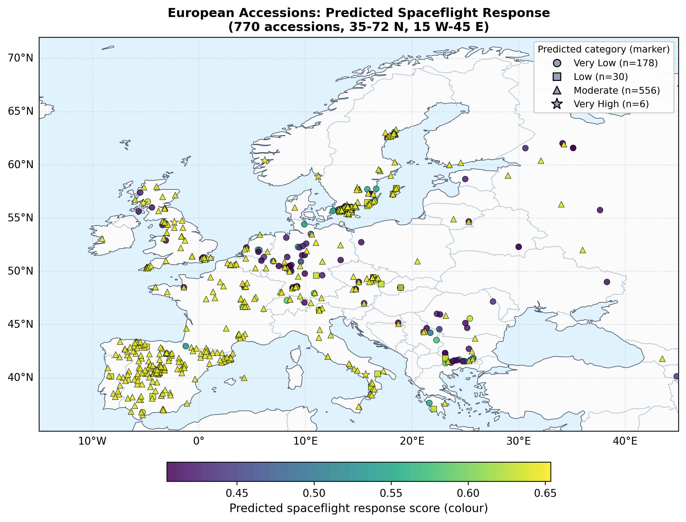
The 770 accessions in the European box (35–72°N, 15°W–45°E): marker shape shows the predicted category, colour the predicted score. Script: code/33_fig15_europe_map.py.
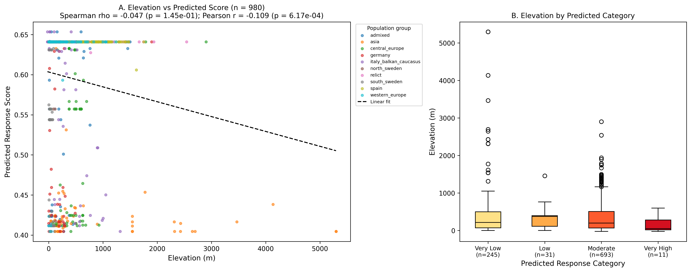
(A) Elevation against predicted score for the 980 accessions with elevation data (Spearman ρ = −0.047, p = 0.145; Pearson r = −0.109). (B) Elevation by predicted category. Script: code/34_fig16_altitude_score.py.
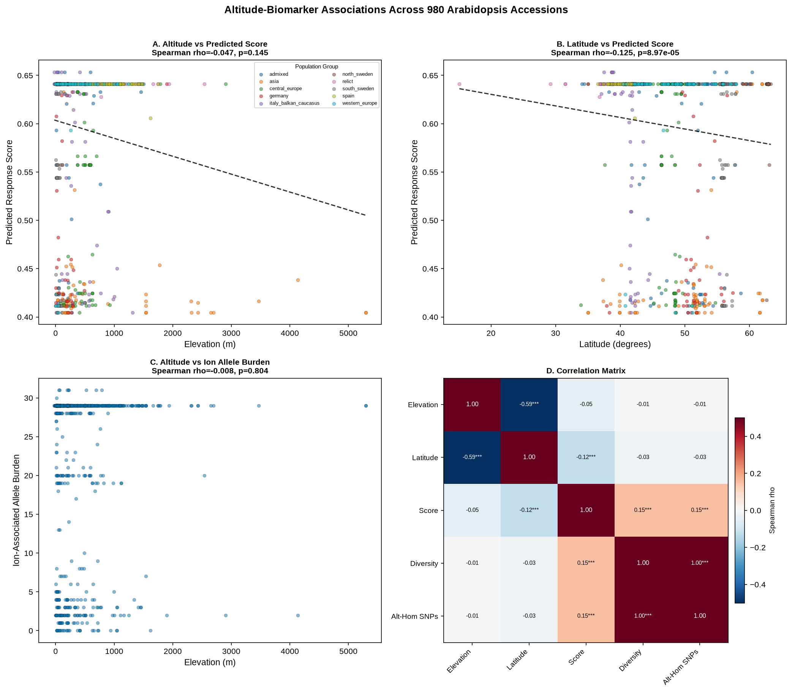
Four-panel analysis of elevation, latitude and predicted score. Panel C's “ion-associated allele burden” is the same variable as the alternate homozygous SNP count, and the loci concerned are metabolite-feature loci, not ionome loci.
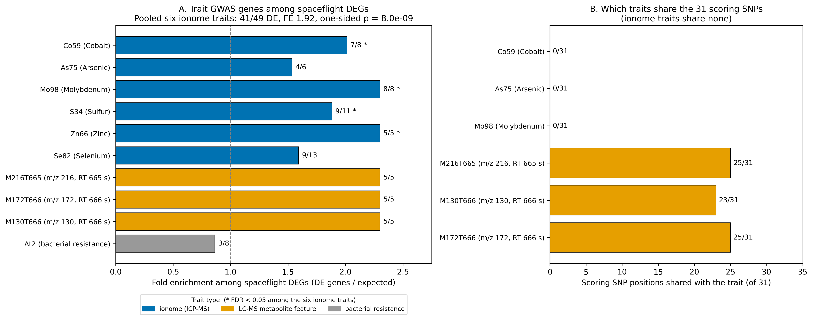
(A) Fold enrichment of each trait's GWAS genes among spaceflight DEGs. Pooled over the six ICP-MS ionome traits, 41 of 49 genes are DE (fold enrichment 1.92, one-sided Fisher p = 8.0e-9). The three LC-MS metabolite features and At2 (bacterial resistance) are shown separately; they are not ion traits. (B) How many of the 31 scoring SNPs each trait shares. Script: code/30_ionome_enrichment.py.
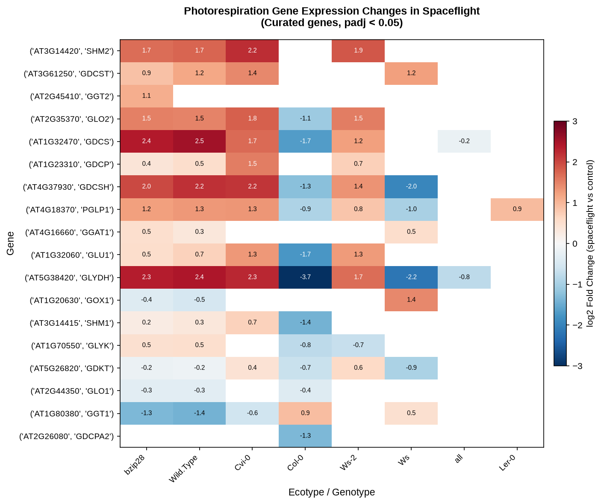
Log2 fold changes of 18 curated photorespiration genes (padj < 0.05) across ecotype and genotype comparisons, including mutant and pooled comparisons. Overall, 53 of 56 photorespiration genes are differentially expressed.
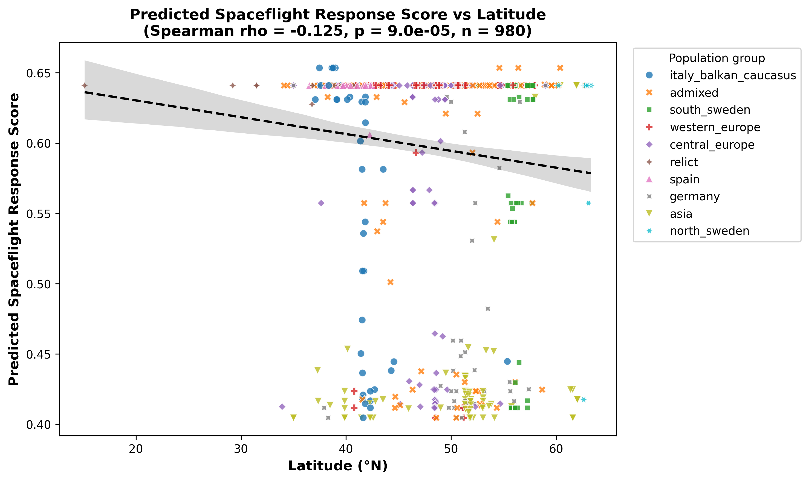
Scatter plot with population group color coding highlighting clinal latitudinal gradients in spaceflight response distinctness.
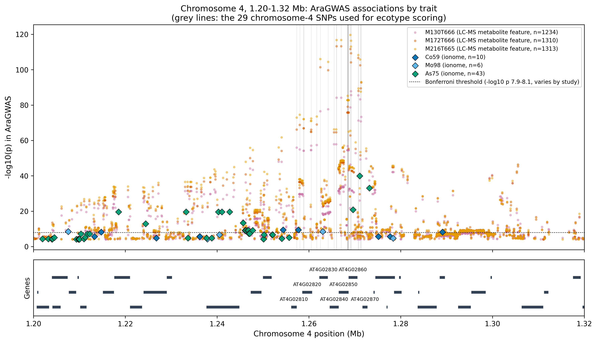
Every association stored in AraGWAS (−log10 p ≥ 4) between 1.20 and 1.32 Mb for the three LC-MS metabolite-feature studies and the cobalt, molybdenum and arsenic studies; grey lines mark the 29 scoring SNPs, and genes are from the AraGWAS gene database. The scoring SNPs are metabolite-feature hits; arsenic, cobalt and molybdenum associations sit at neighbouring SNPs. Script: code/31_chr4_aragwas_window.py.
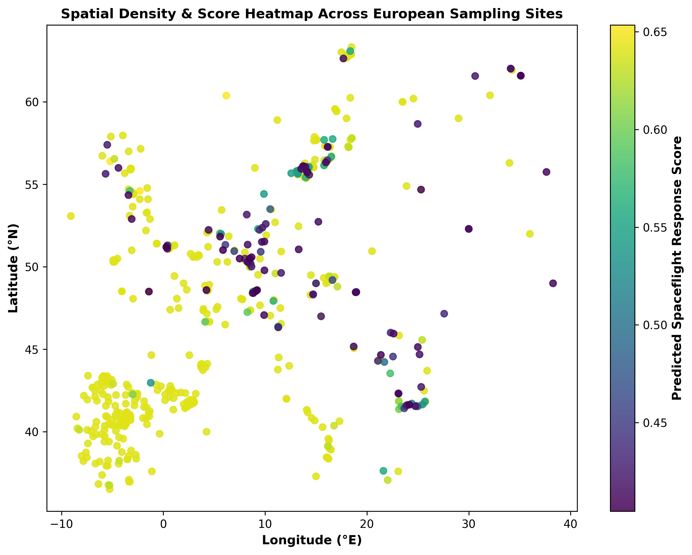
Predicted spaceflight response score at each European accession's origin (35–70°N, 10°W–40°E).
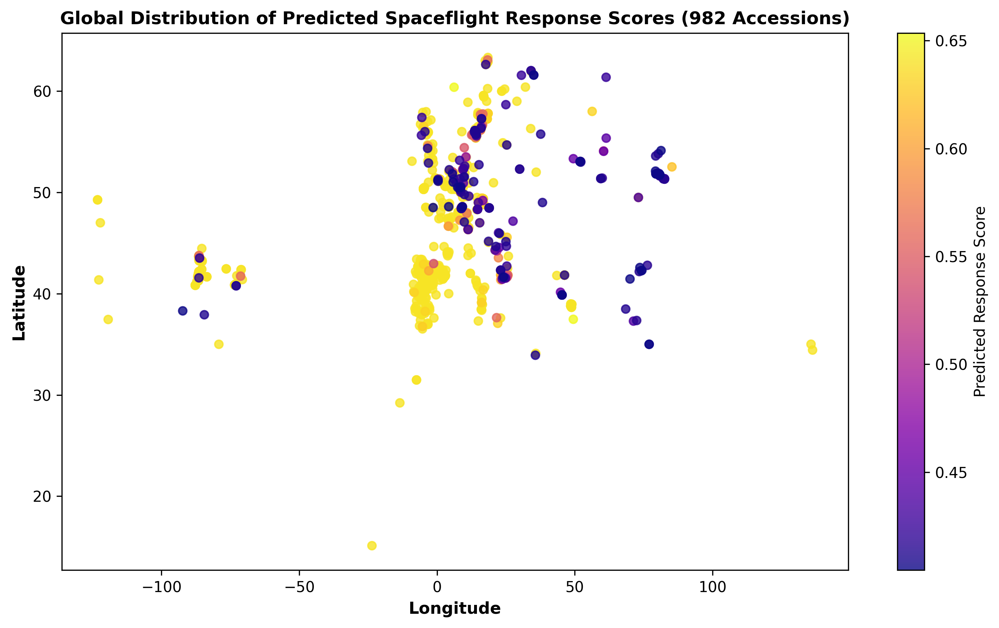
Predicted spaceflight response score at each of the 982 accessions' origins.
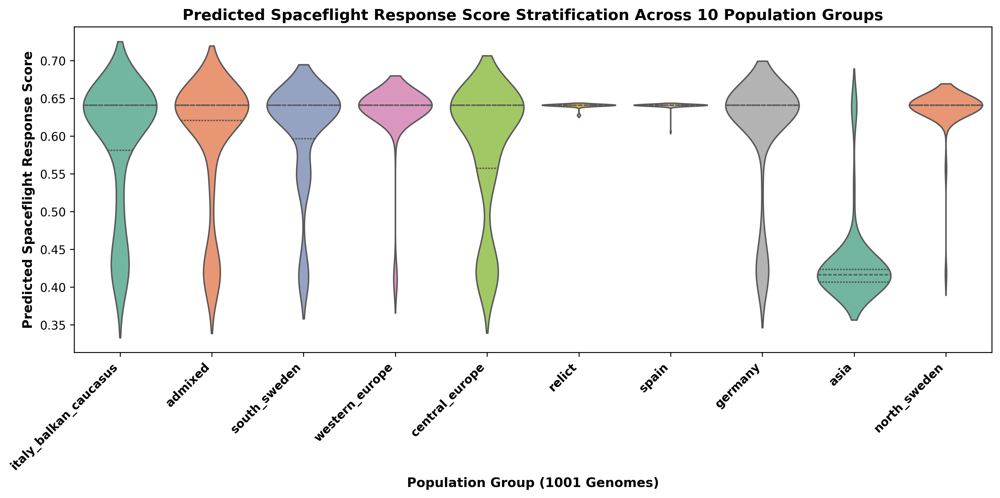
Distribution of predicted spaceflight response scores across 10 demographic population groups from the 1001 Genomes Project.
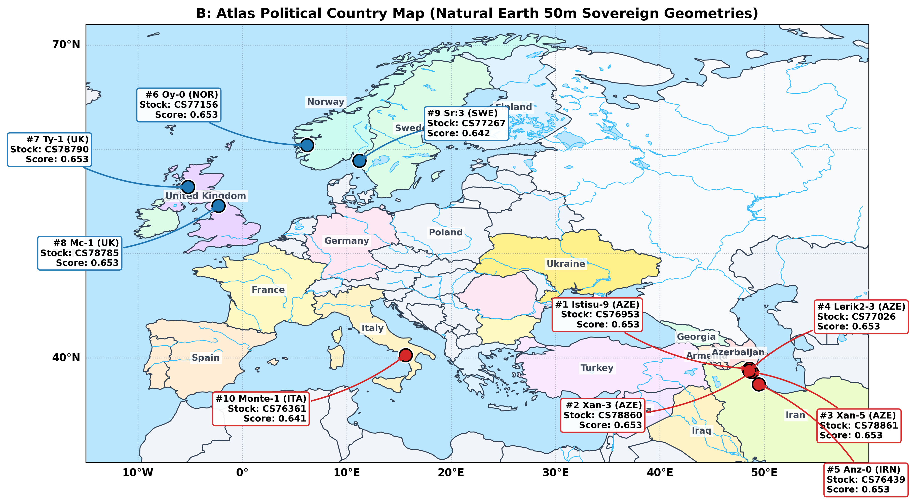
Origins of the top 10 accessions on a Natural Earth 50 m political map, labelled with rank, name, country, ABRC stock number and predicted score (red: Italy/Balkan/Caucasus group; blue: Admixed group). Coordinates are from the 1001 Genomes accession list (tables/top10_predicted_ecotypes.csv). This is panel B of an earlier two-panel figure; panel A, a synthetic terrain illustration, was removed.